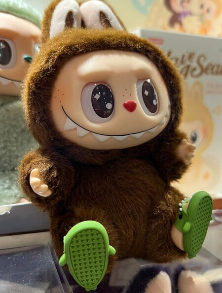

Los Labubus, una nueva tendencia.

Originado en el universo creativo del artista hongkonés Kasing Lung y producido por la firma How2work, Labubu se ha convertido en uno de los personajes más icónicos del mundo del art toy. Esta peculiar criatura de orejas puntiagudas, sonrisa traviesa y estética entre lo adorable y lo grotesco, forma parte de la serie "The Monsters", una colección de figuras que ha ganado gran popularidad en Asia y en comunidades internacionales de coleccionistas.
Cada figura de Labubu se lanza en ediciones limitadas, con variantes temáticas y colores exclusivos, lo que ha impulsado su demanda y valor en el mercado. Más allá de ser simples juguetes, estas piezas son consideradas arte de colección, símbolo de una creciente cultura que mezcla diseño, nostalgia y expresión contemporánea.